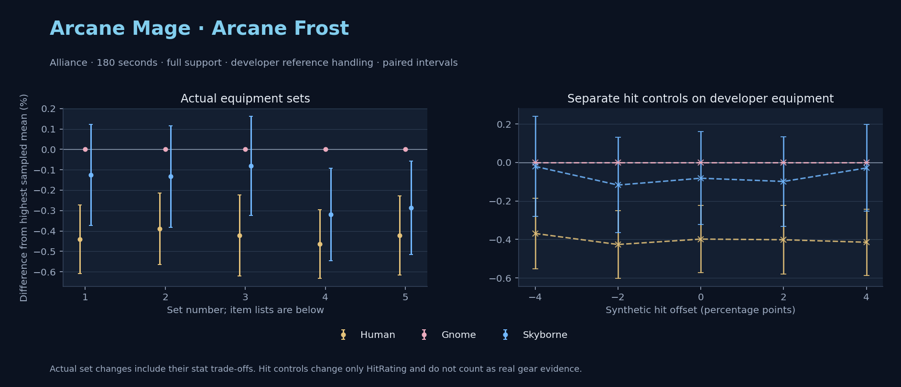

Alliance · Human / Gnome / Skyborne

No pet or guardian appears in the reference combat metrics. Reference: Human, developer equipment, 180 seconds and full support. Pet choices remain those of the developer build.
WoWSims developer · P1 Arcane
Unimplemented enchant or active set effects: [{"id": 181, "pieces": 2, "effects": ["+8 All Resistances."]}, {"id": 181, "pieces": 4, "effects": ["When struck in combat has a 2% chance of freezing the attacker in place for 3s. Can only occur once every 60 sec."]}]
180 seconds, full support and original developer references. Hit below is generic sheet melee / spell hit; school and talent bonuses can be attached directly to spells.
| Race | DPS | Gap and interval | Generic hit | Replay |
|---|---|---|---|---|
| Gnome | 698.41 | +0.000% ± 0.000 | 2.9% / 2.9% | Native input · Website JSON |
| Skyborne | 697.54 | -0.124% ± 0.247 | 2.9% / 2.9% | Native input · Website JSON |
| Human | 695.33 | -0.441% ± 0.169 | 2.9% / 2.9% | Native input · Website JSON |
| Slot | Item | ID | Enchant |
|---|---|---|---|
| Head | Magister's Crown | 16686 | |
| Neck | Gem of Trapped Innocents | 23057 | |
| Shoulder | Sorcerer's Mantle | 226936 | |
| Back | Drape of Vaulted Secrets | 21415 | |
| Chest | Magister's Robes | 16688 | |
| Wrist | Magister's Bindings | 16683 | |
| Hands | Magister's Gloves | 16684 | |
| Waist | Magister's Belt | 16685 | |
| Legs | Magister's Leggings | 16687 | |
| Feet | Magister's Boots | 16682 | |
| Ring 1 | Brilliant Watcher's Signet | 275982 | |
| Ring 2 | Ring of Entropy | 18543 | |
| Trinket 1 | Talisman of Ephemeral Power | 18820 | |
| Trinket 2 | Neltharion's Tear | 19379 | |
| Main hand | Grand Marshal's Mageblade | 23451 | |
| Off hand | Master Dragonslayer's Orb | 19366 | |
| Ranged / relic | Torch of Light | 279246 |
Community calculated list · Published pre-raid
Unimplemented enchant or active set effects: [{"id": 181, "pieces": 2, "effects": ["+8 All Resistances."]}]
180 seconds, full support and original developer references. Hit below is generic sheet melee / spell hit; school and talent bonuses can be attached directly to spells.
| Race | DPS | Gap and interval | Generic hit | Replay |
|---|---|---|---|---|
| Gnome | 726.06 | +0.000% ± 0.000 | 5.9% / 5.9% | Native input · Website JSON |
| Skyborne | 725.09 | -0.133% ± 0.249 | 5.9% / 5.9% | Native input · Website JSON |
| Human | 723.24 | -0.389% ± 0.175 | 5.9% / 5.9% | Native input · Website JSON |
| Slot | Item | ID | Enchant |
|---|---|---|---|
| Head | Sorcerer's Crown | 226935 | Arcanum of Focus |
| Neck | Archlight Talisman | 15856 | Enchant Necklace - Spell Power |
| Shoulder | Magister's Mantle | 16689 | |
| Back | Arcanoweave Cloak | 272411 | |
| Chest | Sorcerer's Robes | 226932 | Enchant Chest - Major Intellect |
| Wrist | Magister's Bindings | 16683 | Enchant Bracer - Greater Spellpower |
| Hands | Sorcerer's Gauntlets | 226930 | Enchant Gloves - Arcane Power |
| Waist | Belt of the Archmage | 18405 | |
| Legs | Magister's Leggings | 16687 | Arcanum of Focus |
| Feet | Sorcerer's Sandals | 226931 | Mystic Rugged Armor Kit |
| Ring 1 | Channeler's Ring | 272406 | |
| Ring 2 | Blessed Band of Light | 272407 | |
| Trinket 1 | Weakness Analyzer | 272438 | |
| Trinket 2 | Uther's Strength | 11302 | |
| Main hand | Sageblade | 22383 | |
| Off hand | Spirit of Aquementas | 11904 | Enchant Off-Hand - Superior Intellect |
| Ranged / relic | Nether Force Wand | 11263 |
Published one-slot hit alternative · Published pre-raid
One source-listed alternative; at least 80% of the source slot score retained. Reported hit selects the contrast; only native stats determine simulation outcomes. This is an experimental combination, not an endorsed best set.
Unimplemented enchant or active set effects: [{"id": 181, "pieces": 2, "effects": ["+8 All Resistances."]}]
180 seconds, full support and original developer references. Hit below is generic sheet melee / spell hit; school and talent bonuses can be attached directly to spells.
| Race | DPS | Gap and interval | Generic hit | Replay |
|---|---|---|---|---|
| Gnome | 716.76 | +0.000% ± 0.000 | 4.9% / 4.9% | Native input · Website JSON |
| Skyborne | 716.18 | -0.081% ± 0.242 | 4.9% / 4.9% | Native input · Website JSON |
| Human | 713.74 | -0.422% ± 0.198 | 4.9% / 4.9% | Native input · Website JSON |
| Slot | Item | ID | Enchant |
|---|---|---|---|
| Head | Sorcerer's Crown | 226935 | Arcanum of Focus |
| Neck | Archlight Talisman | 15856 | Enchant Necklace - Spell Power |
| Shoulder | Magister's Mantle | 16689 | |
| Back | Arcanoweave Cloak | 272411 | |
| Chest | Sorcerer's Robes | 226932 | Enchant Chest - Major Intellect |
| Wrist | Magister's Bindings | 16683 | Enchant Bracer - Greater Spellpower |
| Hands | Gloves of Spell Mastery | 14146 | Enchant Gloves - Arcane Power |
| Waist | Belt of the Archmage | 18405 | |
| Legs | Magister's Leggings | 16687 | Arcanum of Focus |
| Feet | Sorcerer's Sandals | 226931 | Mystic Rugged Armor Kit |
| Ring 1 | Channeler's Ring | 272406 | |
| Ring 2 | Blessed Band of Light | 272407 | |
| Trinket 1 | Weakness Analyzer | 272438 | |
| Trinket 2 | Uther's Strength | 11302 | |
| Main hand | Sageblade | 22383 | |
| Off hand | Spirit of Aquementas | 11904 | Enchant Off-Hand - Superior Intellect |
| Ranged / relic | Nether Force Wand | 11263 |
Published ranked alternatives · Published pre-raid
Recorded source replacements: [{"slot": "shoulder", "from": 227808, "to": 19050, "publishedAlternativeRank": 1, "publishedEpDelta": -11.7, "reason": "First published alternative compatible with the current WoWSims database, class, faction and occupied slots."}, {"slot": "waist", "from": 228190, "to": 18405, "publishedAlternativeRank": 1, "publishedEpDelta": -13.3, "reason": "First published alternative compatible with the current WoWSims database, class, faction and occupied slots."}]
180 seconds, full support and original developer references. Hit below is generic sheet melee / spell hit; school and talent bonuses can be attached directly to spells.
| Race | DPS | Gap and interval | Generic hit | Replay |
|---|---|---|---|---|
| Gnome | 727.91 | +0.000% ± 0.000 | 6.8% / 6.8% | Native input · Website JSON |
| Skyborne | 725.59 | -0.319% ± 0.226 | 6.8% / 6.8% | Native input · Website JSON |
| Human | 724.53 | -0.464% ± 0.168 | 6.8% / 6.8% | Native input · Website JSON |
| Slot | Item | ID | Enchant |
|---|---|---|---|
| Head | Sorcerer's Crown | 226935 | Arcanum of Focus |
| Neck | Archlight Talisman | 15856 | Enchant Necklace - Spell Power |
| Shoulder | Mantle of the Timbermaw | 19050 | |
| Back | Arcanoweave Cloak | 272411 | |
| Chest | Robe of the Archmage | 14152 | Enchant Chest - Major Intellect |
| Wrist | Runecloth Cuffs | 254123 | Enchant Bracer - Greater Spellpower |
| Hands | Sorcerer's Gauntlets | 226930 | Enchant Gloves - Arcane Power |
| Waist | Belt of the Archmage | 18405 | |
| Legs | Magister's Leggings | 16687 | Arcanum of Focus |
| Feet | Sorcerer's Sandals | 226931 | Mystic Rugged Armor Kit |
| Ring 1 | Channeler's Ring | 272406 | |
| Ring 2 | Blessed Band of Light | 272407 | |
| Trinket 1 | Weakness Analyzer | 272438 | |
| Trinket 2 | Frozen Heart of the Mountain | 249469 | |
| Main hand | Sageblade | 22383 | |
| Off hand | Spirit of Aquementas | 11904 | Enchant Off-Hand - Superior Intellect |
| Ranged / relic | Brilliant Wand | 249385 |
Published one-slot hit alternative · Published pre-raid
One source-listed alternative; at least 80% of the source slot score retained. Reported hit selects the contrast; only native stats determine simulation outcomes. This is an experimental combination, not an endorsed best set.
Recorded source replacements: [{"slot": "shoulder", "from": 227808, "to": 19050, "publishedAlternativeRank": 1, "publishedEpDelta": -11.7, "reason": "First published alternative compatible with the current WoWSims database, class, faction and occupied slots."}, {"slot": "waist", "from": 228190, "to": 18405, "publishedAlternativeRank": 1, "publishedEpDelta": -13.3, "reason": "First published alternative compatible with the current WoWSims database, class, faction and occupied slots."}]
180 seconds, full support and original developer references. Hit below is generic sheet melee / spell hit; school and talent bonuses can be attached directly to spells.
| Race | DPS | Gap and interval | Generic hit | Replay |
|---|---|---|---|---|
| Gnome | 724.30 | +0.000% ± 0.000 | 5.8% / 5.8% | Native input · Website JSON |
| Skyborne | 722.22 | -0.287% ± 0.229 | 5.8% / 5.8% | Native input · Website JSON |
| Human | 721.24 | -0.423% ± 0.194 | 5.8% / 5.8% | Native input · Website JSON |
| Slot | Item | ID | Enchant |
|---|---|---|---|
| Head | Sorcerer's Crown | 226935 | Arcanum of Focus |
| Neck | Archlight Talisman | 15856 | Enchant Necklace - Spell Power |
| Shoulder | Mantle of the Timbermaw | 19050 | |
| Back | Arcanoweave Cloak | 272411 | |
| Chest | Robe of the Archmage | 14152 | Enchant Chest - Major Intellect |
| Wrist | Runecloth Cuffs | 254123 | Enchant Bracer - Greater Spellpower |
| Hands | Gloves of Spell Mastery | 14146 | Enchant Gloves - Arcane Power |
| Waist | Belt of the Archmage | 18405 | |
| Legs | Magister's Leggings | 16687 | Arcanum of Focus |
| Feet | Sorcerer's Sandals | 226931 | Mystic Rugged Armor Kit |
| Ring 1 | Channeler's Ring | 272406 | |
| Ring 2 | Blessed Band of Light | 272407 | |
| Trinket 1 | Weakness Analyzer | 272438 | |
| Trinket 2 | Frozen Heart of the Mountain | 249469 | |
| Main hand | Sageblade | 22383 | |
| Off hand | Spirit of Aquementas | 11904 | Enchant Off-Hand - Superior Intellect |
| Ranged / relic | Brilliant Wand | 249385 |
The same declared pool is available to every race. Each race keeps its best validation-sample set with its screening-selected racial policy. Separate samples confirm that choice, with fresh precision samples near the practical-loss boundary. Gaps use the highest sampled mean under that same duration, support and reference treatment as their reference. A zero reference gap does not certify a race; the main matrix also allows uncertainty in the leader.
| Pool | Seconds | Support | References | Race | DPS | Gap and interval | Racial policies / mana | Selected set | Generic hit: melee / spell | Replay |
|---|---|---|---|---|---|---|---|---|---|---|
| published-pre-raid | 60 | full | developer | Gnome | 839.87 | +0.000% ± 0.0005,000 iterations | developer / developer / developerMana waits 0.0s | published-mage-arcane-alliance-3ba70b83556e98f4 | 6.8% / 6.8% | Input · Result · Stats |
| published-pre-raid | 60 | full | developer | Skyborne | 833.09 | -0.807% ± 0.1185,000 iterations | developer / developer / developerMana waits 0.0s | published-mage-arcane-alliance-3ba70b83556e98f4 | 6.8% / 6.8% | Input · Result · Stats |
| published-pre-raid | 60 | full | developer | Human | 827.26 | -1.502% ± 0.1295,000 iterations | developer / developer / developerMana waits 0.0s | published-mage-arcane-alliance-3ba70b83556e98f4-lower-hit | 5.8% / 5.8% | Input · Result · Stats |
| published-pre-raid | 60 | full | explicit | Gnome | 839.87 | +0.000% ± 0.0005,000 iterations | developer / developer / developerMana waits 0.0s | published-mage-arcane-alliance-3ba70b83556e98f4 | 6.8% / 6.8% | Input · Result · Stats |
| published-pre-raid | 60 | full | explicit | Skyborne | 833.09 | -0.807% ± 0.1185,000 iterations | developer / developer / developerMana waits 0.0s | published-mage-arcane-alliance-3ba70b83556e98f4 | 6.8% / 6.8% | Input · Result · Stats |
| published-pre-raid | 60 | full | explicit | Human | 827.26 | -1.502% ± 0.1295,000 iterations | developer / developer / developerMana waits 0.0s | published-mage-arcane-alliance-3ba70b83556e98f4-lower-hit | 5.8% / 5.8% | Input · Result · Stats |
| published-pre-raid | 60 | self | developer | Gnome | 693.55 | +0.000% ± 0.0005,000 iterations | developer / developer / developerMana waits 0.1s | published-mage-arcane-alliance-3ba70b83556e98f4 | 6.8% / 6.8% | Input · Result · Stats |
| published-pre-raid | 60 | self | developer | Skyborne | 681.87 | -1.683% ± 0.1715,000 iterations | developer / developer / developerMana waits 0.1s | published-mage-arcane-alliance-3ba70b83556e98f4 | 6.8% / 6.8% | Input · Result · Stats |
| published-pre-raid | 60 | self | developer | Human | 677.20 | -2.356% ± 0.1465,000 iterations | developer / developer / developerMana waits 0.1s | published-mage-arcane-alliance-3ba70b83556e98f4 | 6.8% / 6.8% | Input · Result · Stats |
| published-pre-raid | 60 | self | explicit | Gnome | 693.55 | +0.000% ± 0.0005,000 iterations | developer / developer / developerMana waits 0.1s | published-mage-arcane-alliance-3ba70b83556e98f4 | 6.8% / 6.8% | Input · Result · Stats |
| published-pre-raid | 60 | self | explicit | Skyborne | 681.87 | -1.683% ± 0.1715,000 iterations | developer / developer / developerMana waits 0.1s | published-mage-arcane-alliance-3ba70b83556e98f4 | 6.8% / 6.8% | Input · Result · Stats |
| published-pre-raid | 60 | self | explicit | Human | 677.20 | -2.356% ± 0.1465,000 iterations | developer / developer / developerMana waits 0.1s | published-mage-arcane-alliance-3ba70b83556e98f4 | 6.8% / 6.8% | Input · Result · Stats |
| published-pre-raid | 180 | full | developer | Gnome | 727.06 | +0.000% ± 0.0005,000 iterations | developer / developer / developerMana waits 0.0s | published-mage-arcane-alliance-3ba70b83556e98f4 | 6.8% / 6.8% | Input · Result · Stats · Website JSON |
| published-pre-raid | 180 | full | developer | Skyborne | 724.03 | -0.417% ± 0.1045,000 iterations | developer / developer / developerMana waits 0.0s | published-mage-arcane-alliance-3ba70b83556e98f4 | 6.8% / 6.8% | Input · Result · Stats · Website JSON |
| published-pre-raid | 180 | full | developer | Human | 723.44 | -0.498% ± 0.0745,000 iterations | developer / developer / developerMana waits 0.0s | published-mage-arcane-alliance-3ba70b83556e98f4 | 6.8% / 6.8% | Input · Result · Stats · Website JSON |
| published-pre-raid | 180 | full | explicit | Gnome | 727.06 | +0.000% ± 0.0005,000 iterations | developer / developer / developerMana waits 0.0s | published-mage-arcane-alliance-3ba70b83556e98f4 | 6.8% / 6.8% | Input · Result · Stats |
| published-pre-raid | 180 | full | explicit | Skyborne | 724.03 | -0.417% ± 0.1045,000 iterations | developer / developer / developerMana waits 0.0s | published-mage-arcane-alliance-3ba70b83556e98f4 | 6.8% / 6.8% | Input · Result · Stats |
| published-pre-raid | 180 | full | explicit | Human | 723.44 | -0.498% ± 0.0745,000 iterations | developer / developer / developerMana waits 0.0s | published-mage-arcane-alliance-3ba70b83556e98f4 | 6.8% / 6.8% | Input · Result · Stats |
| published-pre-raid | 180 | self | developer | Gnome | 591.47 | +0.000% ± 0.00020,000 iterations | developer / developer / developerMana waits 3.0s | published-mage-arcane-alliance-f3820b0cdc4f64c2 | 5.9% / 5.9% | Input · Result · Stats |
| published-pre-raid | 180 | self | developer | Human | 589.34 | -0.359% ± 0.05120,000 iterations | developer / developer / developerMana waits 2.7s | published-mage-arcane-alliance-f3820b0cdc4f64c2 | 5.9% / 5.9% | Input · Result · Stats |
| published-pre-raid | 180 | self | developer | Skyborne | 589.31 | -0.365% ± 0.05320,000 iterations | developer / developer / developerMana waits 3.0s | published-mage-arcane-alliance-f3820b0cdc4f64c2 | 5.9% / 5.9% | Input · Result · Stats |
| published-pre-raid | 180 | self | explicit | Gnome | 591.47 | +0.000% ± 0.00020,000 iterations | developer / developer / developerMana waits 3.0s | published-mage-arcane-alliance-f3820b0cdc4f64c2 | 5.9% / 5.9% | Input · Result · Stats |
| published-pre-raid | 180 | self | explicit | Human | 589.34 | -0.359% ± 0.05120,000 iterations | developer / developer / developerMana waits 2.7s | published-mage-arcane-alliance-f3820b0cdc4f64c2 | 5.9% / 5.9% | Input · Result · Stats |
| published-pre-raid | 180 | self | explicit | Skyborne | 589.31 | -0.365% ± 0.05320,000 iterations | developer / developer / developerMana waits 3.0s | published-mage-arcane-alliance-f3820b0cdc4f64c2 | 5.9% / 5.9% | Input · Result · Stats |
| published-pre-raid | 300 | full | developer | Skyborne | 721.61 | +0.000% ± 0.0005,000 iterations | developer / developer / developerMana waits 0.4s | published-mage-arcane-alliance-3ba70b83556e98f4 | 6.8% / 6.8% | Input · Result · Stats |
| published-pre-raid | 300 | full | developer | Gnome | 717.74 | -0.536% ± 0.0825,000 iterations | developer / developer / developerMana waits 0.2s | published-mage-arcane-alliance-3ba70b83556e98f4 | 6.8% / 6.8% | Input · Result · Stats |
| published-pre-raid | 300 | full | developer | Human | 716.64 | -0.688% ± 0.0855,000 iterations | developer / developer / developerMana waits 0.2s | published-mage-arcane-alliance-3ba70b83556e98f4 | 6.8% / 6.8% | Input · Result · Stats |
| published-pre-raid | 300 | full | explicit | Skyborne | 721.61 | +0.000% ± 0.0005,000 iterations | developer / developer / developerMana waits 0.4s | published-mage-arcane-alliance-3ba70b83556e98f4 | 6.8% / 6.8% | Input · Result · Stats |
| published-pre-raid | 300 | full | explicit | Gnome | 717.74 | -0.536% ± 0.0825,000 iterations | developer / developer / developerMana waits 0.2s | published-mage-arcane-alliance-3ba70b83556e98f4 | 6.8% / 6.8% | Input · Result · Stats |
| published-pre-raid | 300 | full | explicit | Human | 716.64 | -0.688% ± 0.0855,000 iterations | developer / developer / developerMana waits 0.2s | published-mage-arcane-alliance-3ba70b83556e98f4 | 6.8% / 6.8% | Input · Result · Stats |
| published-pre-raid | 300 | self | developer | Human | 550.05 | +0.000% ± 0.0005,000 iterations | developer / developer / developerMana waits 45.0s | published-mage-arcane-alliance-f3820b0cdc4f64c2 | 5.9% / 5.9% | Input · Result · Stats |
| published-pre-raid | 300 | self | developer | Gnome | 546.88 | -0.576% ± 0.1255,000 iterations | oncd / developer / developerMana waits 47.2s | published-mage-arcane-alliance-f3820b0cdc4f64c2 | 5.9% / 5.9% | Input · Result · Stats |
| published-pre-raid | 300 | self | developer | Skyborne | 545.97 | -0.741% ± 0.1335,000 iterations | developer / developer / developerMana waits 48.3s | published-mage-arcane-alliance-f3820b0cdc4f64c2 | 5.9% / 5.9% | Input · Result · Stats |
| published-pre-raid | 300 | self | explicit | Human | 550.05 | +0.000% ± 0.0005,000 iterations | developer / developer / developerMana waits 45.0s | published-mage-arcane-alliance-f3820b0cdc4f64c2 | 5.9% / 5.9% | Input · Result · Stats |
| published-pre-raid | 300 | self | explicit | Gnome | 546.88 | -0.576% ± 0.1255,000 iterations | oncd / developer / developerMana waits 47.2s | published-mage-arcane-alliance-f3820b0cdc4f64c2 | 5.9% / 5.9% | Input · Result · Stats |
| published-pre-raid | 300 | self | explicit | Skyborne | 545.97 | -0.741% ± 0.1335,000 iterations | developer / developer / developerMana waits 48.3s | published-mage-arcane-alliance-f3820b0cdc4f64c2 | 5.9% / 5.9% | Input · Result · Stats |
| developer-reference | 60 | full | developer | Gnome | 807.44 | +0.000% ± 0.0005,000 iterations | developer / developer / developerMana waits 0.0s | developer | 2.9% / 2.9% | Input · Result · Stats |
| developer-reference | 60 | full | developer | Skyborne | 802.50 | -0.611% ± 0.1145,000 iterations | developer / developer / developerMana waits 0.0s | developer | 2.9% / 2.9% | Input · Result · Stats |
| developer-reference | 60 | full | developer | Human | 796.49 | -1.356% ± 0.0665,000 iterations | developer / developer / developerMana waits 0.0s | developer | 2.9% / 2.9% | Input · Result · Stats |
| developer-reference | 60 | full | explicit | Gnome | 807.44 | +0.000% ± 0.0005,000 iterations | developer / developer / developerMana waits 0.0s | developer | 2.9% / 2.9% | Input · Result · Stats |
| developer-reference | 60 | full | explicit | Skyborne | 802.50 | -0.611% ± 0.1145,000 iterations | developer / developer / developerMana waits 0.0s | developer | 2.9% / 2.9% | Input · Result · Stats |
| developer-reference | 60 | full | explicit | Human | 796.49 | -1.356% ± 0.0665,000 iterations | developer / developer / developerMana waits 0.0s | developer | 2.9% / 2.9% | Input · Result · Stats |
| developer-reference | 60 | self | developer | Gnome | 672.79 | +0.000% ± 0.0005,000 iterations | oncd / developer / developerMana waits 0.0s | developer | 2.9% / 2.9% | Input · Result · Stats |
| developer-reference | 60 | self | developer | Skyborne | 663.91 | -1.320% ± 0.1665,000 iterations | developer / developer / developerMana waits 0.1s | developer | 2.9% / 2.9% | Input · Result · Stats |
| developer-reference | 60 | self | developer | Human | 660.71 | -1.795% ± 0.1455,000 iterations | developer / developer / developerMana waits 0.1s | developer | 2.9% / 2.9% | Input · Result · Stats |
| developer-reference | 60 | self | explicit | Gnome | 672.79 | +0.000% ± 0.0005,000 iterations | oncd / developer / developerMana waits 0.0s | developer | 2.9% / 2.9% | Input · Result · Stats |
| developer-reference | 60 | self | explicit | Skyborne | 663.91 | -1.320% ± 0.1665,000 iterations | developer / developer / developerMana waits 0.1s | developer | 2.9% / 2.9% | Input · Result · Stats |
| developer-reference | 60 | self | explicit | Human | 660.71 | -1.795% ± 0.1455,000 iterations | developer / developer / developerMana waits 0.1s | developer | 2.9% / 2.9% | Input · Result · Stats |
| developer-reference | 180 | full | developer | Gnome | 697.58 | +0.000% ± 0.0005,000 iterations | developer / developer / developerMana waits 0.0s | developer | 2.9% / 2.9% | Input · Result · Stats · Website JSON |
| developer-reference | 180 | full | developer | Skyborne | 697.32 | -0.037% ± 0.1115,000 iterations | developer / developer / developerMana waits 0.0s | developer | 2.9% / 2.9% | Input · Result · Stats · Website JSON |
| developer-reference | 180 | full | developer | Human | 694.31 | -0.469% ± 0.0775,000 iterations | developer / developer / developerMana waits 0.0s | developer | 2.9% / 2.9% | Input · Result · Stats · Website JSON |
| developer-reference | 180 | full | explicit | Gnome | 697.58 | +0.000% ± 0.0005,000 iterations | developer / developer / developerMana waits 0.0s | developer | 2.9% / 2.9% | Input · Result · Stats |
| developer-reference | 180 | full | explicit | Skyborne | 697.32 | -0.037% ± 0.1115,000 iterations | developer / developer / developerMana waits 0.0s | developer | 2.9% / 2.9% | Input · Result · Stats |
| developer-reference | 180 | full | explicit | Human | 694.31 | -0.469% ± 0.0775,000 iterations | developer / developer / developerMana waits 0.0s | developer | 2.9% / 2.9% | Input · Result · Stats |
| developer-reference | 180 | self | developer | Gnome | 570.99 | +0.000% ± 0.00020,000 iterations | developer / developer / developerMana waits 2.4s | developer | 2.9% / 2.9% | Input · Result · Stats |
| developer-reference | 180 | self | developer | Skyborne | 568.94 | -0.359% ± 0.05420,000 iterations | developer / developer / developerMana waits 2.4s | developer | 2.9% / 2.9% | Input · Result · Stats |
| developer-reference | 180 | self | developer | Human | 568.89 | -0.369% ± 0.05220,000 iterations | developer / developer / developerMana waits 2.2s | developer | 2.9% / 2.9% | Input · Result · Stats |
| developer-reference | 180 | self | explicit | Gnome | 570.99 | +0.000% ± 0.00020,000 iterations | developer / developer / developerMana waits 2.4s | developer | 2.9% / 2.9% | Input · Result · Stats |
| developer-reference | 180 | self | explicit | Skyborne | 568.94 | -0.359% ± 0.05420,000 iterations | developer / developer / developerMana waits 2.4s | developer | 2.9% / 2.9% | Input · Result · Stats |
| developer-reference | 180 | self | explicit | Human | 568.89 | -0.369% ± 0.05220,000 iterations | developer / developer / developerMana waits 2.2s | developer | 2.9% / 2.9% | Input · Result · Stats |
| developer-reference | 300 | full | developer | Skyborne | 692.76 | +0.000% ± 0.0005,000 iterations | developer / developer / developerMana waits 0.0s | developer | 2.9% / 2.9% | Input · Result · Stats |
| developer-reference | 300 | full | developer | Gnome | 690.57 | -0.315% ± 0.0895,000 iterations | oncd / developer / developerMana waits 0.0s | developer | 2.9% / 2.9% | Input · Result · Stats |
| developer-reference | 300 | full | developer | Human | 689.38 | -0.488% ± 0.0965,000 iterations | developer / developer / developerMana waits 0.0s | developer | 2.9% / 2.9% | Input · Result · Stats |
| developer-reference | 300 | full | explicit | Skyborne | 692.76 | +0.000% ± 0.0005,000 iterations | developer / developer / developerMana waits 0.0s | developer | 2.9% / 2.9% | Input · Result · Stats |
| developer-reference | 300 | full | explicit | Gnome | 690.57 | -0.315% ± 0.0895,000 iterations | oncd / developer / developerMana waits 0.0s | developer | 2.9% / 2.9% | Input · Result · Stats |
| developer-reference | 300 | full | explicit | Human | 689.38 | -0.488% ± 0.0965,000 iterations | developer / developer / developerMana waits 0.0s | developer | 2.9% / 2.9% | Input · Result · Stats |
| developer-reference | 300 | self | developer | Human | 536.29 | +0.000% ± 0.0005,000 iterations | developer / developer / developerMana waits 42.3s | developer | 2.9% / 2.9% | Input · Result · Stats |
| developer-reference | 300 | self | developer | Gnome | 533.43 | -0.532% ± 0.1305,000 iterations | oncd / developer / developerMana waits 44.4s | developer | 2.9% / 2.9% | Input · Result · Stats |
| developer-reference | 300 | self | developer | Skyborne | 532.68 | -0.672% ± 0.1365,000 iterations | developer / developer / developerMana waits 45.6s | developer | 2.9% / 2.9% | Input · Result · Stats |
| developer-reference | 300 | self | explicit | Human | 536.29 | +0.000% ± 0.0005,000 iterations | developer / developer / developerMana waits 42.3s | developer | 2.9% / 2.9% | Input · Result · Stats |
| developer-reference | 300 | self | explicit | Gnome | 533.43 | -0.532% ± 0.1305,000 iterations | oncd / developer / developerMana waits 44.4s | developer | 2.9% / 2.9% | Input · Result · Stats |
| developer-reference | 300 | self | explicit | Skyborne | 532.68 | -0.672% ± 0.1365,000 iterations | developer / developer / developerMana waits 45.6s | developer | 2.9% / 2.9% | Input · Result · Stats |
180 seconds, full support and the developer equipment anchor. These checks test creature sensitivity without a full gear search.
| Target | References | Race | DPS | Gap and interval | Replay |
|---|---|---|---|---|---|
| beast | developer | Gnome | 698.11 | +0.000% ± 0.000 | Input · Result |
| beast | developer | Skyborne | 697.54 | -0.082% ± 0.241 | Input · Result |
| beast | developer | Human | 695.33 | -0.398% ± 0.175 | Input · Result |
| beast | explicit | Gnome | 698.11 | +0.000% ± 0.000 | Input · Result |
| beast | explicit | Skyborne | 697.54 | -0.082% ± 0.241 | Input · Result |
| beast | explicit | Human | 695.33 | -0.398% ± 0.175 | Input · Result |
| elemental | developer | Skyborne | 732.42 | +0.000% ± 0.000 | Input · Result |
| elemental | developer | Gnome | 698.11 | -4.684% ± 0.230 | Input · Result |
| elemental | developer | Human | 695.33 | -5.064% ± 0.241 | Input · Result |
| elemental | explicit | Skyborne | 732.42 | +0.000% ± 0.000 | Input · Result |
| elemental | explicit | Gnome | 698.11 | -4.684% ± 0.230 | Input · Result |
| elemental | explicit | Human | 695.33 | -5.064% ± 0.241 | Input · Result |
Some equipment has unimplemented enchant or set effects
These known-issue notes are source context. Runtime checks establish current cast coverage, including Mutilate. They do not prove every mechanic matches the game.